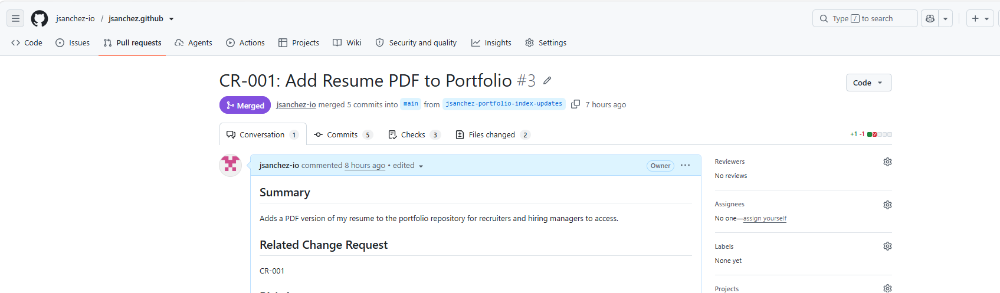

Enterprise Git Version Control & Production Asset Deployment
Demonstrated a controlled process for updating a live website. By following standard approval steps and using Git, I safely added an updated resume PDF and refreshed the website link without risking site downtime or errors.
View GitHub Pull Request #3 ↗01 Business Problem
Context & Organization: Fictional Enterprise Web Platform (simulating IT operations for a company's public-facing site).
The Core Challenge: Visitors attempting to download the resume were receiving nothing, as there was no file to download. Editing the website code directly on the live server is risky—a single mistake could break the page for visitors or leave no record of who made the change.
Business & Compliance Impact: Making unverified changes directly to live systems creates security risks, violates IT compliance standards (such as IT General Controls), and leaves no clear audit trail for management.
02 Technical Approach & Process
Tools & Systems Used: Git, GitHub, VS Code, HTML5, Notepad++, and ITIL Change Management principles.
Step-by-Step Workflow (Simplified for Stakeholders):
- Phase 1 (Request & Risk Assessment): Submitted formal ticket CR-001: Add Resume PDF to Portfolio. Evaluated the change as low-risk because it involved adding a simple file rather than altering major system functionality.
- Phase 2 (Safe Workspace Creation): Created a local Git repository and worked on an isolated draft branch (
jsanchez-portfolio-index-updates). This ensured the live website remained completely untouched while work was underway. - Phase 3 (Implementation & Testing): Added the new
Jean-Lasso-Sanchez-Resume.pdffile and updated the download link on the webpage. Tested the page locally in a web browser to confirm the link worked cleanly across desktop and mobile screens. - Phase 4 (Peer Review & Safe Deployment): Submitted Pull Request #3 for review. Once checked and approved, the 5 commits were merged into the main live site branch, accompanied by an emergency rollback plan if any issues arose.
03 Evidence & Key Deliverables
Artifact 1: Approved Change Request (CR-001) & Pull Request #3
The record below confirms Pull Request #3 was reviewed and merged into main from the isolated jsanchez-portfolio-index-updates branch.

# Change Record Audit Summary
Ticket ID: CR-001
Title: Add Resume PDF to Portfolio
Pull Request: jsanchez-io/jsanchez.github#3
Status: MERGED
Source Branch: jsanchez-portfolio-index-updates -> Target Branch: main
Commits Merged: 5
Files Changed: 2 (Jean-Lasso-Sanchez-Resume.pdf, index.html)Artifact 2: Version Control History & Emergency Recovery Plan
Every single step is logged with a unique reference code. If a file ever becomes corrupted, the team can restore the previous working version in seconds using the command below:
# Commands used to save changes with clear notes
git add Jean-Lasso-Sanchez-Resume.pdf index.html
git commit -m "[CR-001] Add updated resume PDF and refresh download link"
git push origin jsanchez-portfolio-index-updates
# Rollback Command (Restores live site instantly if an error occurs)
git revert <commit-id>
git push origin main04 Outcome & Key Takeaways
Results Achieved:
- 100% Traceability & Compliance: Created a clear audit trail linking the initial business request directly to the completed website change.
- Zero Disruption: Updated live files seamlessly without causing layout bugs or website downtime for visitors.
- Clear Communication: Translated technical steps into structured updates so non-technical management could easily follow progress.
Takeaways & Next Steps: Following a proper change management routine—even for routine updates—builds operational stability and trust across technical and business teams. Next, I plan to set up an automated testing tool (CI/CD) to automatically check for broken links prior to approval.